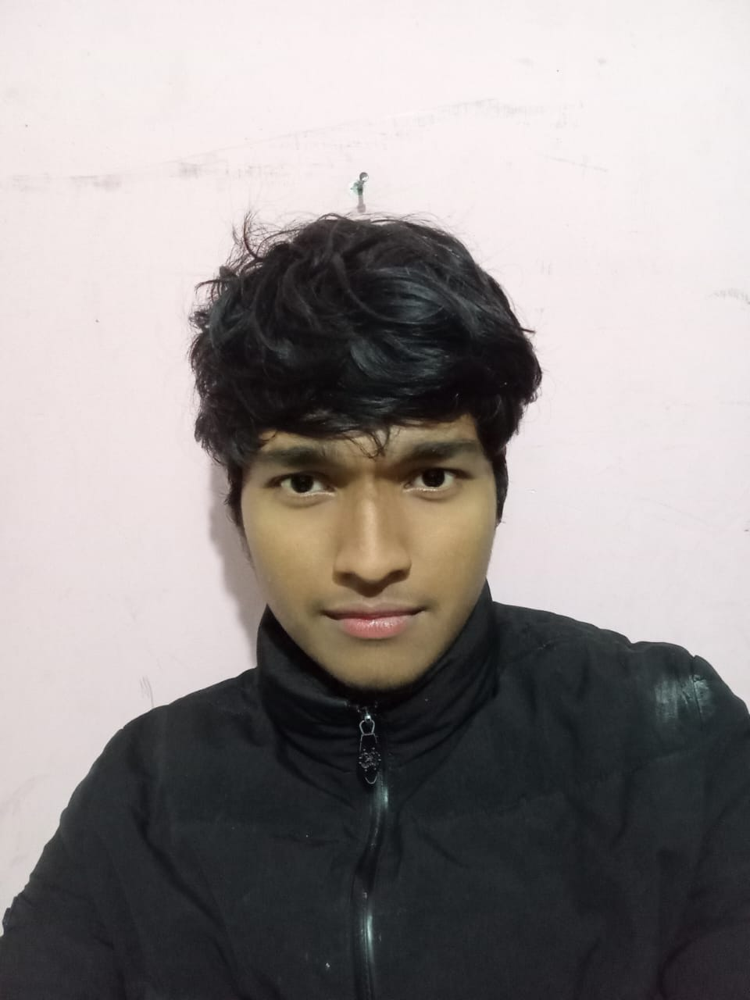

Hi, I am Pratik
Chauhan
Full Stack Developer
I am a passionate Front-end developer with a strong background in front-end . My expertise lies in creating dynamic, user-friendly web applications that provide seamless user experiences. In my spare time, I enjoy contributing to open-source projects and working on personal projects that challenge my skills and explore new technologies. I am always eager to learn and stay updated with industry trends. My goal is to leverage my skills to create innovative solutions and contribute to impactful projects. Feel free to modify any section to better fit your style and experiences!
Contact Me
Visit my CV
